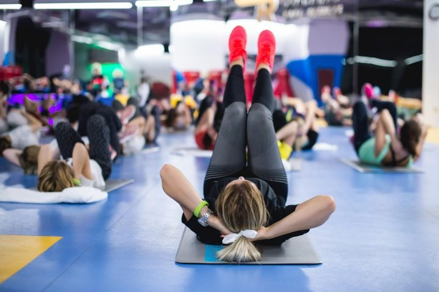

SPORTUL ȘI CELE 7 BENEFICII MENTALE ALE ACESTUIA
Cu siguranță ai auzit de faptul că sportul este o componentă esențială a drumului tău către o condiție fizică de top. Sau, de ce nu, atunci când cauți un răspuns la întrebarea: ce ne-ar ajuta să avem o viață activă și sănătoasă?
Ei bine, răspunsul este destul de previzibil, nu? Mișcarea. Sportul. Nimic mai adevărat. Și toate acestea sunt la îndemâna ta, trebuie doar să îți dorești. Condiția fizică de invidiat și dezvoltarea armonioasă a corpului tău vor fi posibile datorită sportului. Potrivit cercetătorilor, practicarea diferitelor exerciții sportive sporește și sănătatea psihică a celor care sunt mai activi. Starea lor de bine este vizibilă cu ochiul liber, sunt mai fericiți și mai încrezători în forțele proprii.
Te poți alătura și tu lor dacă încerci să te motivezi și să te apuci de mișcare chiar de mâine!
PRACTICAREA SPORTULUI ÎȚI ÎMBUNĂTĂȚEȘTE STAREA FIZICĂ ȘI MENTALĂ
Dacă vrei să te simți plin de energie, totul se rezumă la acest lucru: fă sport!
Indiferent dacă intri pe un teren și practici un sport (baschet, fotbal, tenis, etc.), dacă mergi la o sală de fitness sau faci o simplă plimbare în natură, această activitate fizică activează endorfinele. Acestea sunt substanțele chimice din creier responsabile cu starea ta de bine. Ele sunt cele care te fac să te simți mai relaxat și mai fericit. Sporturile practicate în echipă sunt, în special, cele care te plasează într-un cadru care te motivează să te autodepășești.
Răsplata se va dovedi pe măsura eforturilor. Va fi una plină de satisfacții, care îți va îmbunătăți aptitudinile fizice, dar și cele mentale. Aceste exerciții îți oferă, totodată, oportunitatea de a-ți dezvolta capacități mai bune de interacțiune socială. Îți permit să legi relații mai strânse cu prietenii sau colegii tăi, toate într-un cadru relaxant și plăcut.
SPORTUL ÎȚI ÎMBUNĂTĂȚEȘTE CONCENTRAREA ȘI ATENȚIA
Activitatea fizică regulată te ajută să îți păstrezi abilitățile mintale cheie de-a lungul vieții. Aceste abilități sunt extrem de importante și includ gândirea critică, învățarea sau memoria.
Cercetările ultimilor ani au demonstrat că este foarte util să încerci o combinație între activități aerobice și unele de întărire a mușchilor. Participarea la aceste tipuri de activități de trei până la cinci ori pe săptămână, timp de cel puțin 30 de minute, poate oferi nenumărate beneficii pentru sănătatea ta mintală.
SPORTUL REDUCE STRESUL ȘI DEPRESIA
Când ești activ, mintea ta este distrasă de la factorii de stres de care te lovești în fiecare zi. Exercițiile fizice te vor ajuta să reduci nivelurile hormonilor responsabili cu stresul, iar acest lucru îți va fi de folos cu siguranță atunci când vei avea o zi mai proastă. Practicarea unui sport este deosebit de importantă. Te ajută extrem de mult la alungarea gândurilor negative și a frustrărilor acumulate de-a lungul zilei.
În același timp, aceste exerciții stimulează producerea de endorfine. Acești potențiatori naturali ai bunei-dispoziții sunt cei care pot menține stresul și depresia la un nivel minim. Endorfinele sunt cele care te pot ajuta să te simți mai relaxat și mai optimist după un o zi dificilă. Totuși, experții sunt de acord că este nevoie de mai multe cercetări în domeniu pentru a determina relația dintre sport și depresie. Beneficiile de pe urma activităților fizice nu pot fi, însă, trecute cu vederea.
ACTIVITATEA FIZICĂ ÎMBUNĂTĂȚEȘTE CALITATEA SOMNULUI
Este dovedit faptul că sportul, în general, dar și alte forme de activitate fizică, îmbunătățesc calitatea somnului. Acest lucru este posibil datorită faptului că sportul presupune, în primul rând, un efort fizic. În această situație șansele ca, la sfârșitul zilei, să adormi mai repede și să ai un somn profund și liniștitor cresc considerabil. Faptul că dormi mai bine îți îmbunătățește memoria, atenția sau concentrarea, precum și starea de spirit.
Când ești odihnit, stresul din timpul zilei și situațiile de pe parcursul acesteia nu ți se mai vor părea atât de obositoare. Totuși, ia în considerare începerea acestor exerciții cât de devreme poți în cursul zilei. Activitatea fizică începută seara, înainte de culcare, poate crea un ‘’boost’’ de energie care te va împiedica să dormi.
SPORTUL TE AJUTĂ SĂ MENȚII O GREUTATE OPTIMĂ
În majoritatea cazurilor, cu excepția celor medicale care limitează activitatea fizică prin însăși natura afecțiunii, dar cu atât mai mult în cele legate de greutate și nutriție, medicii recomandă exercițiile sportive ca una dintre modalitățile cele mai bune care te ajută să menții o greutate optimă.
Sporturile individuale, cum ar fi alergarea, mersul cu bicicleta sau ridicarea greutăților, sunt modalități deosebit de eficiente de a arde calorii și/sau de a-ți dezvolta masa musculară. Faptul că rămâi într-un interval de greutate recomandat reduce probabilitatea de a dezvolta diabet zaharat, colesterol ridicat sau hipertensiune arterială.
SPORTUL SPOREȘTE ÎNCREDEREA ÎN SINE A PRACTICANTULUI
Exercițiile fizice te ajută să te apropii corpul pe care ți-l dorești. După ce îl obții, te vei privi cu alți ochi. Vei căpăta mai multă încredere în forțele proprii și vei trece mai ușor peste greutățile zilnice. Cu vigoarea și energia căpătate în urma activității fizice intense, șansele ca tu să reușești să atingi țelurile pe care ți le-ai propus cresc. În sala de antrenament, dar mai ales în afara acesteia, în viața de zi cu zi – acest lucru e vizibil.
SPORTUL ESTE STRÂNS LEGAT DE PERFECȚIONAREA UNOR CALITĂȚI SPECIFICE LIDERILOR, A UNOR TRĂSĂTURI INTRINSEC LEGATE DE ACEȘTIA
Sporturile de echipă (fotbal, baschet) reprezintă adevărate ‘’seminarii’’ în ceea ce privește observarea unor trăsături specifice liderilor.
Studiile realizate în acest sens relevă o corelație între participarea la activitățile sportive, de obicei la cele de echipă, și calitățile de conducere. Datorită oportunității de a se antrena sau a se juca împreună, cei care fac sport sunt mai înclinați să adopte o “mentalitate de echipă”. La locul de muncă și în situațiile sociale – acest lucru te ajută enorm. De asemenea, pot dezvolta și calități specifice liderilor, precum viziunea, charisma, creativitatea sau forța interioară. Această ‘’mentalitate de echipă’’ este, cu siguranță, una care ajută la dezvoltarea unor puternice calități de conducere de-a lungul timpului.
CONCLUZIE
Acestea sunt cele 7 beneficii mentale ale sportului pe care ți le-am adus la cunoștință. Alte beneficii o să le descoperi singur – dacă o să te apuci de mișcare acum!
Argumentele pro – o mulțime, de la avantajele pe care le oferă la orice vârstă, începând de la cele mai fragede, la legătura dovedită cu sănătatea mintală, fericirea sau viața împlinită. Nu trebuie să uităm, bineînțeles, endorfinele pe care le declanșează exercițiul fizic – acele substanțe chimice care ne dau o stare de bine, o stare care ne face să trecem mult mai ușor peste încercările zilnice și, de ce nu, chiar ale vieții.
Argumente contra – Nici unul! Nu există scuze! Ai un motiv întemeiat în acest moment care să te împiedice să te implici 100% ? Și care să te împiedice să îți atingi potențialul? Alege un sport, oricare! Fă mișcare!